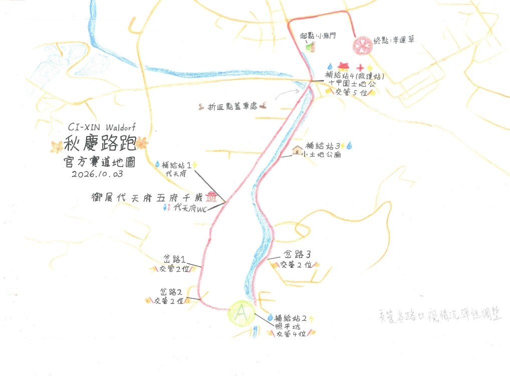
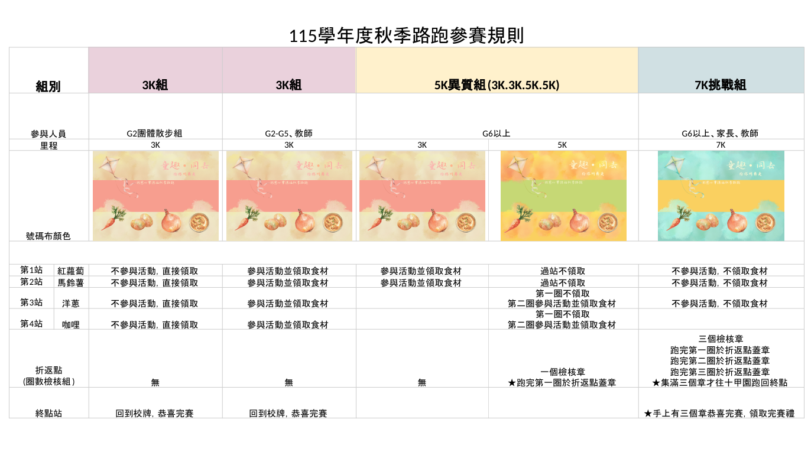

115 學年度 親師生秋季節慶
童趣同去路跑
教師須知
佮你同齊走
115 年 10 月 3 日（六）1當日時程
| 時間 | 內容 |
|---|---|
| 08:00–08:10 | 各班集合、點名 |
| 08:10–08:15 | 集合晨詩，校長給予童趣的祝福 |
| 08:15–08:25 | 暖身操 |
| 08:25–08:30 | 各分組於小綠門預備就位 |
| 08:30 | 7K 組出發（6–12 年級、家長） |
| 08:35 | 5K 異質組出發（6–9 年級） |
| 08:45 | 3K 組出發（3–5 年級） 3K 散步組出發（2 年級及家長） 1 年級散步組出發（十甲園土地公往鎮安宮方向） |
| 09:50–10:00 | 各班回班級集合 |
| 10:00–11:20 | 各班活動，由班級導師安排 |
| 11:20–12:30 | 班級煮食：一起煮咖哩飯 |
| 12:30–13:00 | 午餐 |
| 13:00–13:30 | 打掃、結束圈 |
路線圖

家長可以怎麼參與
・7K 挑戰組開放家長報名，與孩子一起完成路跑。報名連結：https://forms.gle/2wLAgkyndJH8qbhJ6
・7K 挑戰組號碼布可以自由發揮創意：中間的留白處，歡迎寫上屬於自己的勝利數字，或畫上自己的創意。
・路跑起點在小綠門，終點在慈心校門口，歡迎到現場加油。
・請自備水杯，現場補給站只有少量公用杯。
・7K 挑戰組開放家長報名，與孩子一起完成路跑。報名連結：https://forms.gle/2wLAgkyndJH8qbhJ6
・7K 挑戰組號碼布可以自由發揮創意：中間的留白處，歡迎寫上屬於自己的勝利數字，或畫上自己的創意。
・路跑起點在小綠門，終點在慈心校門口，歡迎到現場加油。
・請自備水杯，現場補給站只有少量公用杯。
2規則說明

3參賽注意事項給導師
一、路跑前準備
- 學務處預計 9/29（二）發放號碼布。
- 請老師帶學生做號碼布創意書寫：可寫學號、班級座號，或想寫的名字，自由發揮創意。
- 號碼布請各班彈性處理，固定在衣服上（例：別針或縫上）；別針由班級／學生自備。
- 請老師帶學生分組，分配拿取的食材，並圈選在號碼布上。
- 一個孩子限定到一個站點領取食材；如果分配到的食材數量大於 1，請在號碼布圈選食材並註明數量，例如：洋蔥＊3；只拿 1 個就不用註明。
- 各班是否帶小背包或購物袋裝食材回來，由老師自行決定。
- 環保：現場有補給站，請學生自備杯子。補給站只有少量公用杯。
- 天氣可能變化，請提醒學生帶雨衣備用。
食材與分組
每班食材數量固定，不論班級人數，由學生合力運回。
| 食材 | 國中小 | 高中 |
|---|---|---|
| 紅蘿蔔 | 6 根 | 8 根 |
| 馬鈴薯 | 6 顆 | 8 顆 |
| 洋蔥 | 6 份 | 8 份 |
| 咖哩 | 6 包 | 8 包 |
| 合計 | 24 份 | 32 份 |
- 國中小分組：每四人一組，每人至少拿一樣。
- 班級不足 24 人時，有些同學拿兩樣。例：22 人，就有兩位同學各拿兩樣（號碼布上記得圈選食材並寫上＊2），24 份都要分配完並拿回來。
- 此批到貨有機洋蔥非常小巧可愛，一份是兩顆。號碼布上，請標記份數。例如：兩份就寫＊2，現場會得到四顆。
- 跑 7K 的孩子不拿取食材，班級的食材由 5K 異質組分配領回。
- 高中及多數報7K班級，食材將外送到班（預計 11 點左右送達各班）：高中由配食組運送；六到九年級由 6B 快送小隊協助，感謝配送組及快送小隊！
二、路跑當天
- 8:00–8:10 到大草皮集合、點名，位置同防災演練，各班點名回報。
- 高中生集合地點在紫藤樓三年級前方的水泥磚區。
- 起跑順序：
- 7K 組：7K 家長及社群 → 7K 高中生 → 依序 9 到 6 年級的 7K 組
- 5K 異質組：依序 9 到 6 年級
- 3K 組：5 年級、4 年級、3 年級的 3K 組 → 2 年級 3K 散步組
- 1 年級散步組（小綠門出發，由十甲園土地公往鎮安宮）
- 起跑線在小綠門斑馬線，四人一排，從小綠門斑馬線一路往後排。請導師協助依上列順序排隊。
- 路跑路線當天仍有居民使用道路，請導師務必提醒學生靠右側跑，確保安全，也不影響交通。
三、各班掃街區域
G3–G5 於節慶前進行社區打掃，其他年級於節慶當天打掃。
| 年級 | 區域 |
|---|---|
| G1 | 班級 |
| G2 | 校園 |
| G3 | 香和路繞校園三段（節慶前） |
| G4 | 香南路（節慶前） |
| G5 | 安平路、鐵軌（節慶前） |
| G6 | 照安路（路跑路線） |
| G7 | 照平坑溪流、洗衣棚清溪流 |
| G8 | 香南路與照安路 112 巷中間區域 |
| G9 | 陪一年級互動 |
| G10–G12 | 香南路往 7-11 方向 |
四、節慶當天煮食
- 廚房提供班級人數之白飯。
- 每班食材配額因活動安排而數量有限，請老師斟酌；各班可以自行增添菜色。
- 家長若參與共食，請班級自行討論要準備的食物。
- 學校提供咖哩粉（即路跑時領回的咖哩包），用量依個人口味調整。特別提醒：年段較小的孩子，請由成人協助確認咖哩粉用量。
- 食材處理工具（刀、砧板、爐具、鍋具等）由各班自行分配及準備，當天烘焙教室工具不開放外借使用。
- 本次活動的食材費用不到一餐午餐費，差額將於節慶後另擇一天，以換餐「肉鬆或海苔」提供。
- 沒有參加學校午餐的學生，費用由家長會支應。
謝謝各位導師的協助及配合！
4停車宣導
因應活動區域調整，小綠門停車場禁止停車；照安路由小綠門至十甲園土地公廟沿線左右兩側禁止停車。家長請至冬山國中停車。